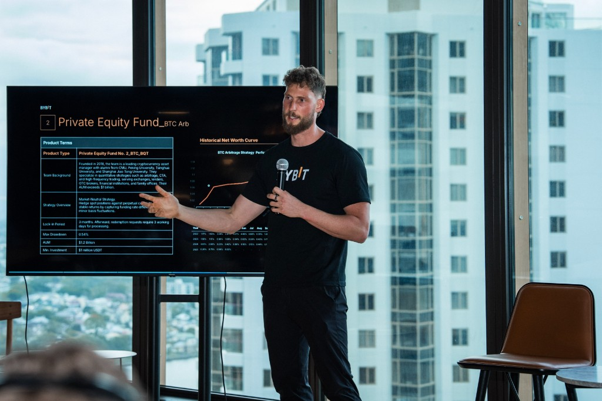

Quote off the series and the book.
Price and the attention series on one axis. Size from the saved book. Replay the move.
Proprietary attention series, derived from search demand and from count markets, plus the order book Tendex has been recording. Venues do not keep that book. The series is Tendex’s.
The screen is built for market makers, prop firms, and funds. The first names we bring are retail and pro traders, onto Forum’s waitlist.
Price and the attention series on one axis. Size from the saved book. Replay the move.
Book depth before the order. Each trade sits in time with the attention series. Polymarket is connected.
Pull Tendex’s series into the model you already run. Raw partner feeds stay off the API.
How a trade gets to Forum
Forum keeps the customer and the fee. Tendex is the screen and the referral. Paid when the person takes the action you define.
Forum’s own institutional use is cultural and demand risk: studios, labels, and brands. That buyer sits apart from a speculative desk. Polymarket is the connected venue today. Forum’s index, price, book, and funding rate go on the desk when you allow them.
Suggested targets
A general list. We will adjust it with whoever owns Forum’s go-to-market, then prove what the partnership needs.
Tendex shows up as a LinkedIn company profile, in posts on X, and in a Discord community. Most of the activity is on X and Discord.
Two weeks after that. A commercial conversation only once Forum can see who joined.
Put the index on the desk, on your terms: index, price, order book, and funding rate. Name the action that counts.
Leo puts that series on the desk. Ben brings retail and pro traders onto the waitlist now, and institutional names when you want liquidity.
If the cohort acts, we price the next step in writing.
They are the near-term cohort, onto the waitlist. Brand and live audiences come in as the partnership grows. The Forum row stays off crypto attention markets. Ben’s crypto distribution is how the first retail and pro names get found.
50/wkA suggested pace. 5× is a suggested bar on the action you define.
Educators, VIP partners, affiliates, and the people who follow them. This is the list that fills the waitlist. The Forum row itself stays clear of crypto markets.
$1.5M+A commercial mark to aim at with you, once a cohort is trading.
Sport, retail, and automotive. Buyers who already pay for cultural presence, when an index is a product or a city.
100kSuggested reach, if an index needs a public room.
Promoters, sponsors, and a tour audience in Australia and New Zealand. In the partnership once an index needs a public room.
Built the terminal. Credit-risk scorecards, then the model code. Now a senior developer in business banking.

Brings retail and pro traders onto the waitlist, and stays until they take the action Forum sets.